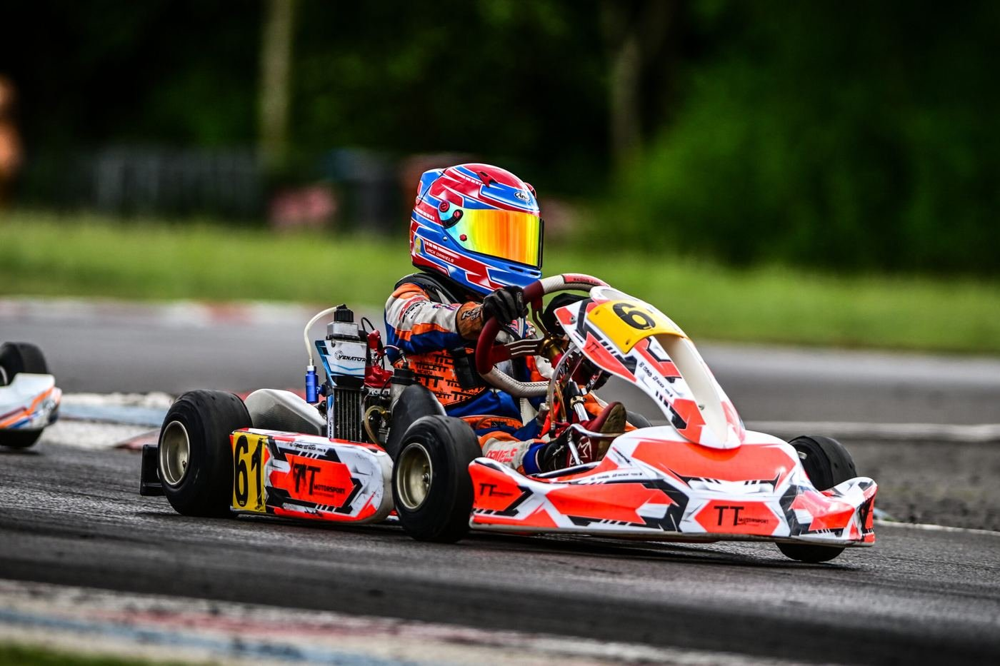
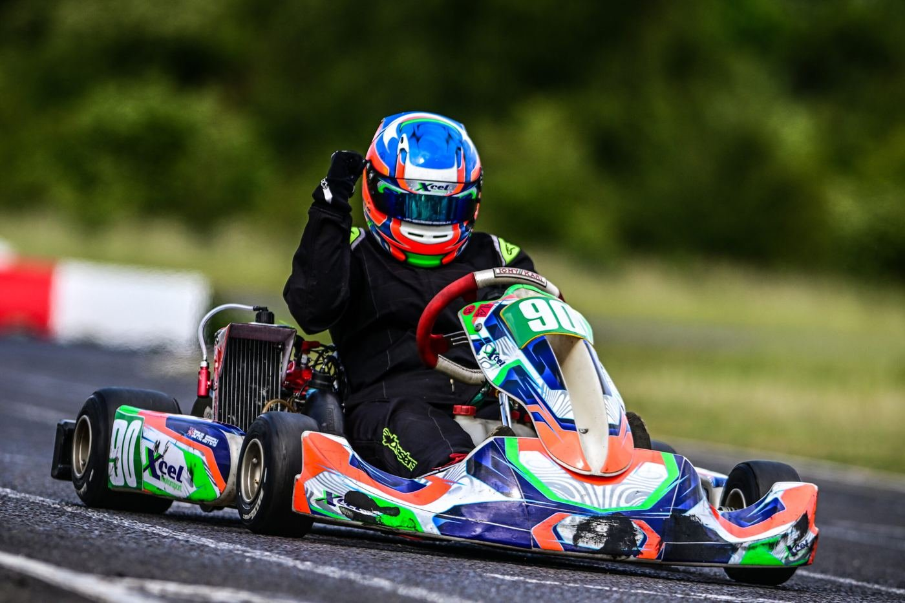

The club
Forest Edge is run by its members. The people who race here are the people who put the circuit up, marshal it, and take it down again on Sunday night.
An owner driver club on MOD ground.
Forest Edge Kart Club races on Ministry of Defence land at Barton Stacey, under a Motorsport UK circuit licence. The tarmac is permanent; nothing else is.
Barriers, race control, the grid and the paddock layout are built by marshals and officials ahead of every meeting and dismantled again afterwards. That is why the site rules are strict, and it is why the club is always glad to hear from anyone willing to marshal.
The circuit rewards a driver who can carry speed: fast straights linked by technical corner complexes, split into three timed sectors.
Membership & entry
- Race dayMember
- £65Non-member £75
- Practice dayMember
- £60Non-member £70
- Annual membership
- £70Per season
- Extra family member
- £50Per person
- Reserved pit space
- £100Per season
- Transponder hire
- £15Per weekend
- Electric hook-up
- £20Per weekend

Documents & results
Championship Regulations
How the 2026 club championship is scored and run.
Download PDF 134 KBSupplementary Regulations
The 2026 SRs, as amended on 4 August 2026.
Download PDF 397 KBParental Consent Form
Needed for every driver under 18 before they sign on.
Download Alpha TimingResults
Archive
Every Forest Edge championship from 2014 to today.
OpenThese are scans and Word exports, so a screen reader may not read them cleanly. If you need any of this in another format, email compsec@fekc.co.uk and the club will sort it out.
No marshals,
no meeting.
Every session at Forest Edge runs because volunteers are standing on the posts. Marshals build the circuit on Friday, work it through the weekend, and take it down on Sunday evening.
No experience is needed and training is provided. If you can give a weekend, email the Competition Secretary.
Safeguarding
Forest Edge runs cadet and junior classes, and the club has a Safeguarding Officer. If something concerns you about the welfare of a young person at the circuit, raise it. You do not need proof and you can ask to stay anonymous.
If the concern involves someone at the club, or the club has not got back to you, go straight to Motorsport UK or the NSPCC instead. Both routes are independent of Forest Edge.
Raising a safeguarding concern
- The clubBillie Toye, Club Safeguarding Officersafeguarding@fekc.co.uk
- Motorsport UKIf the concern involves a club official, or the club has not respondedsafeguarding@motorsportuk.org01753 765000
- NSPCC helplineFree advice for any adult worried about a child0808 800 5000
If a child is in immediate danger, call the police on 999. You do not need to be certain before you report something.